← MultiDisplay programvare · Bruksanvisning
Slik setter du sammen skjermen (Waveshare ESP32-S3-Touch-LCD-7) med bakplate og stativ. Det tar rundt et kvarter. Trykk på et bilde for å se det større.
Legg skjermen med glasset ned på noe mykt, for eksempel skumplaten fra esken. I esken ligger:
Du trenger i tillegg et lite stjerneskrujern og en USB-C-kabel med lader (5 V). Kablene og de små sølvskruene blir til overs.
La beskyttelsesfilmen på glasset sitte til du er ferdig.
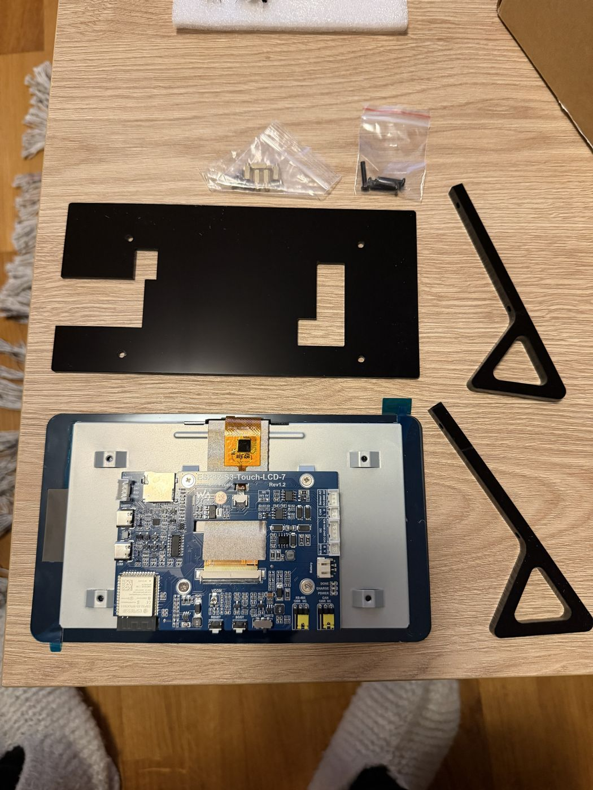
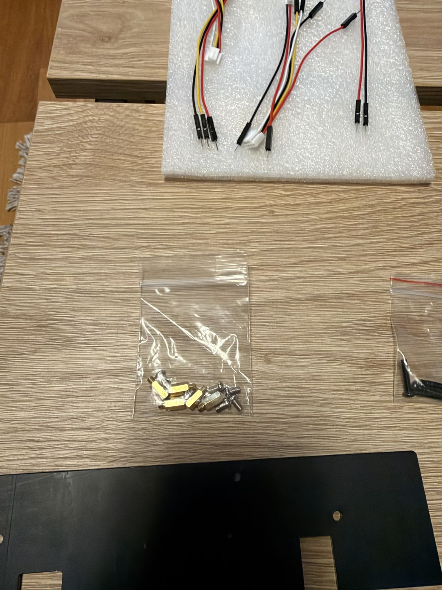
Ta ut de fire messingavstandsstykkene. Skru dem inn med fingrene i de fire grå festene i hjørnene av metallplaten bak på skjermen. Det holder å skru dem til de stopper. Ikke bruk tang, for gjengene er små.
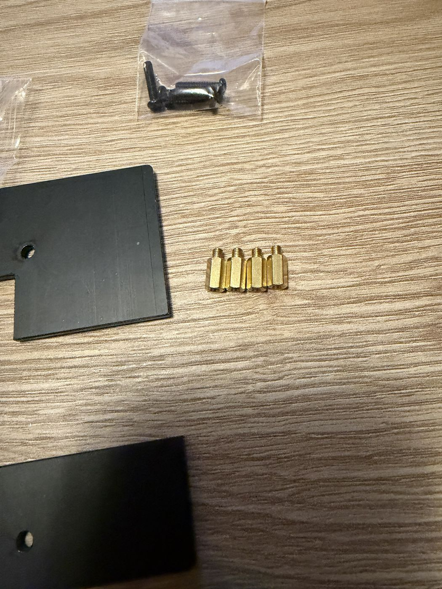
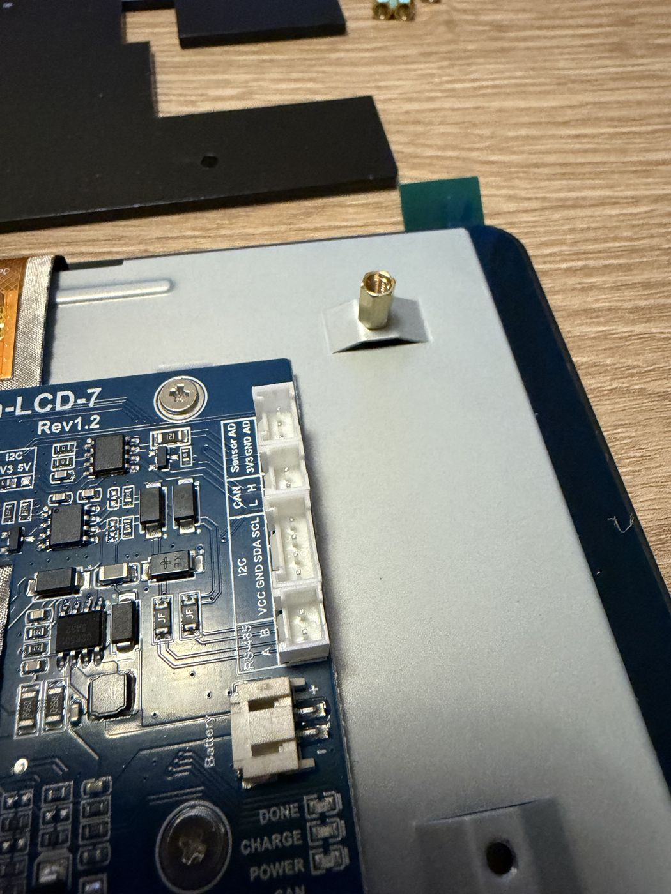
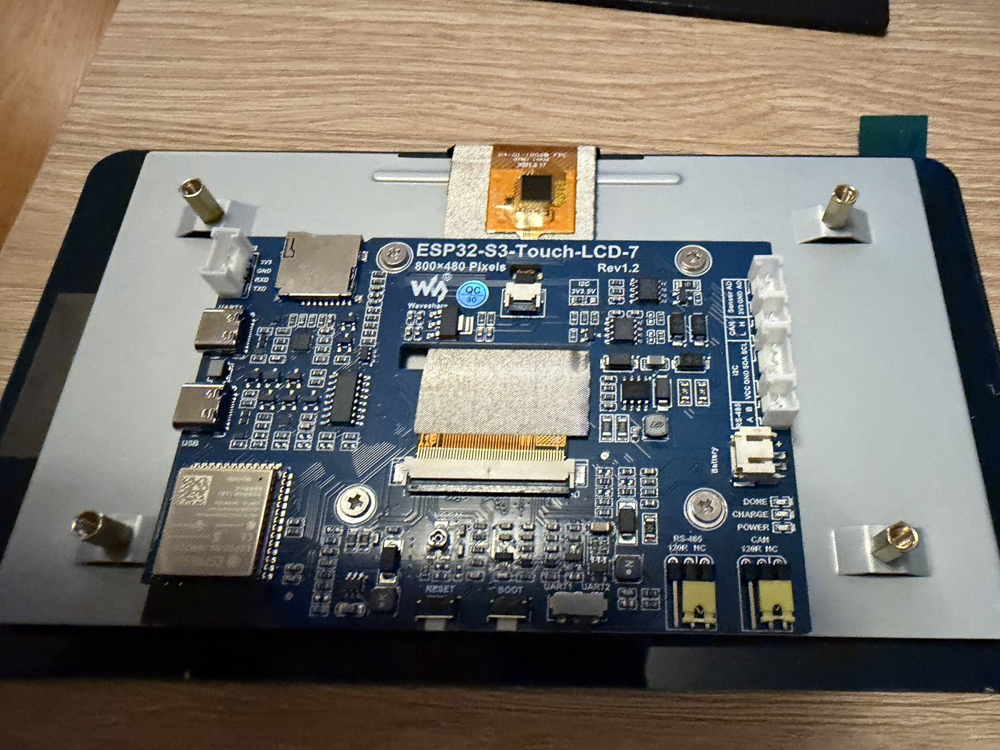
Snu bakplaten slik at den store utsparingen havner over de hvite kontaktene til høyre på kortet, de som er merket Sensor, CAN, I2C, RS-485 og Battery. Den lille utsparingen øverst til venstre skal ligge over den hvite kontakten der. Legg platen ned slik at de fire hullene treffer avstandsstykkene.
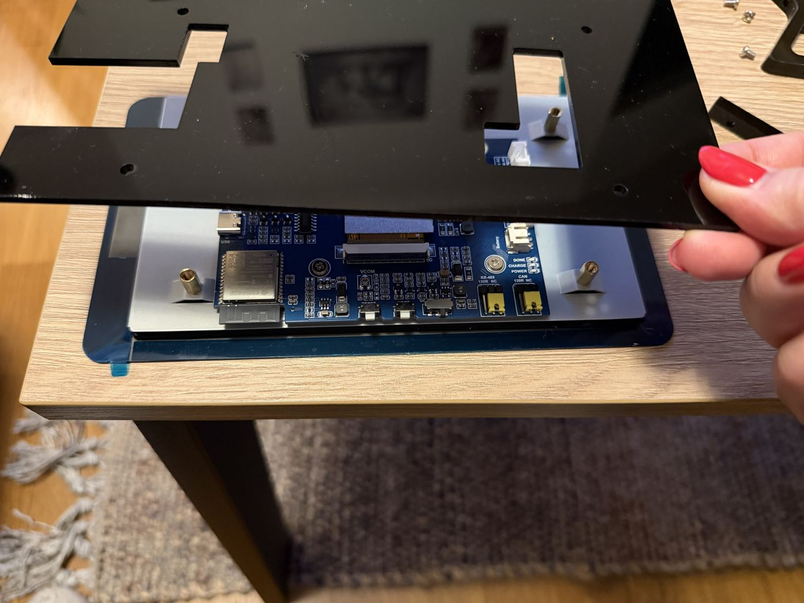
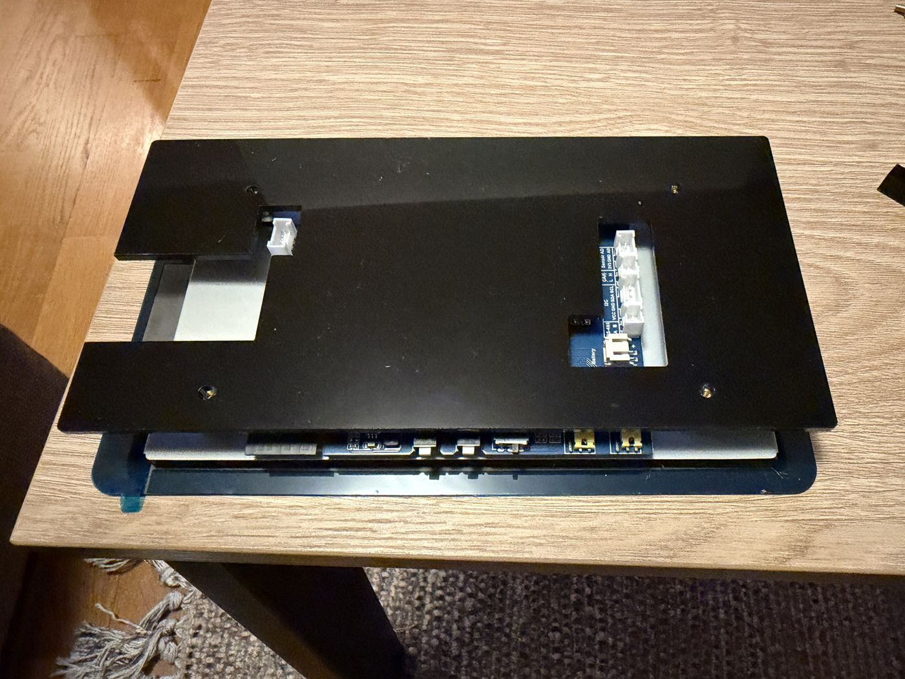
Legg de to støttebena oppå bakplaten, ett ved hver kortside. Trekantene skal peke bort fra kanten med knappene (RESET og BOOT). Hvert ben har to hull, og de skal ligge rett over hullene i bakplaten.
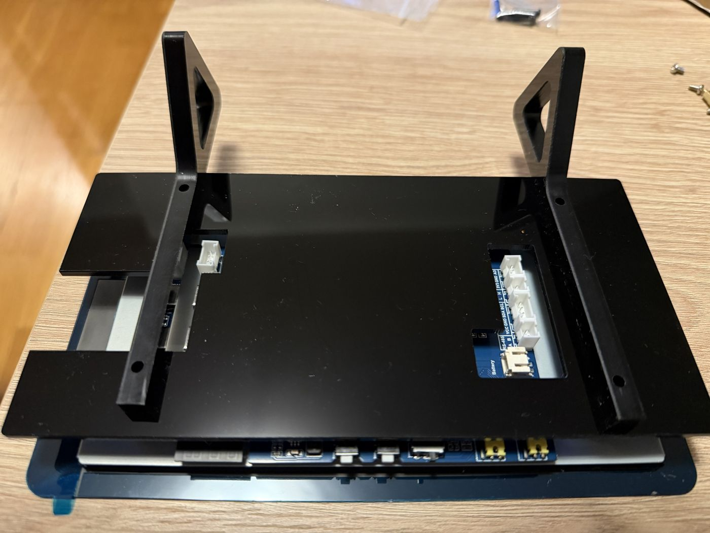
Stikk de fire lange svarte skruene gjennom hullene i bena og bakplaten. Skru dem inn i avstandsstykkene under. Bytt mellom skruene og stram litt om gangen. Stram bare til de sitter, for akrylen kan sprekke hvis du strammer for hardt.
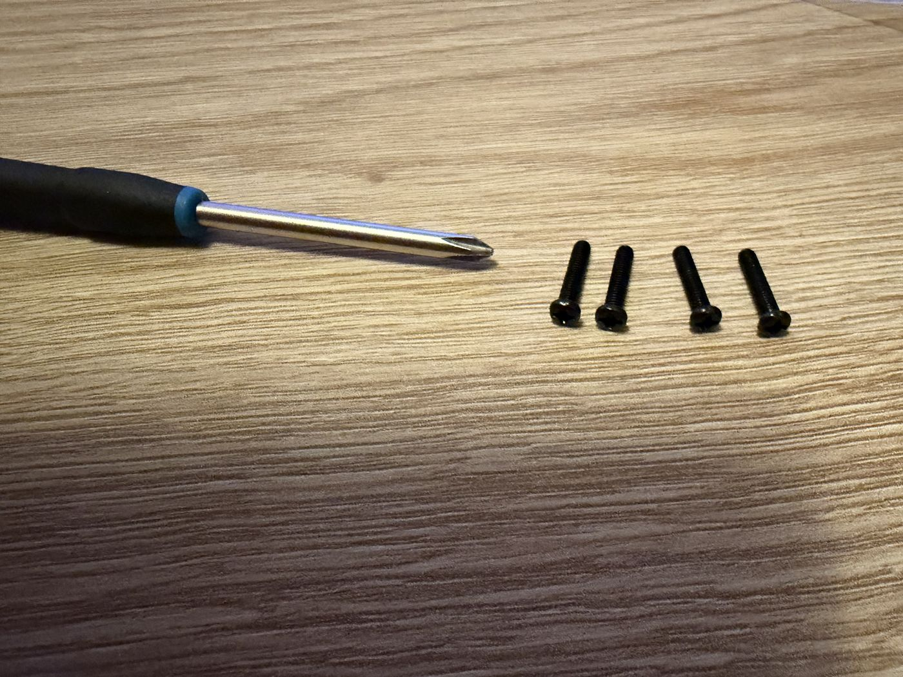
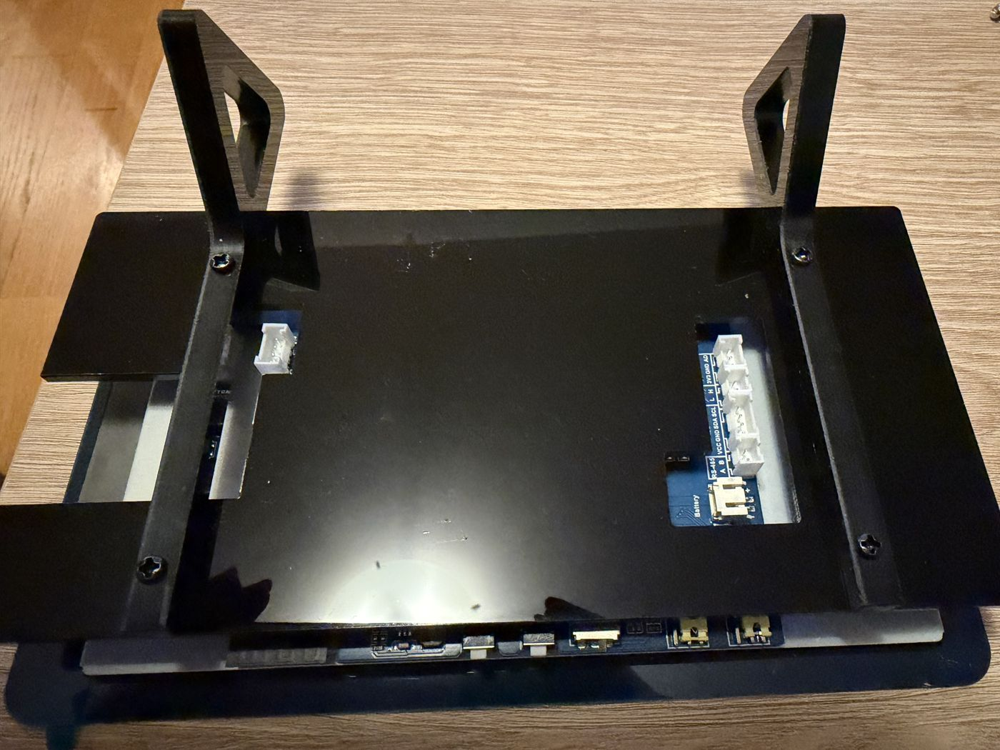
Sett skjermen på bordet slik at den står på trekantene, og ta av beskyttelsesfilmen. Skjermen heller litt bakover.
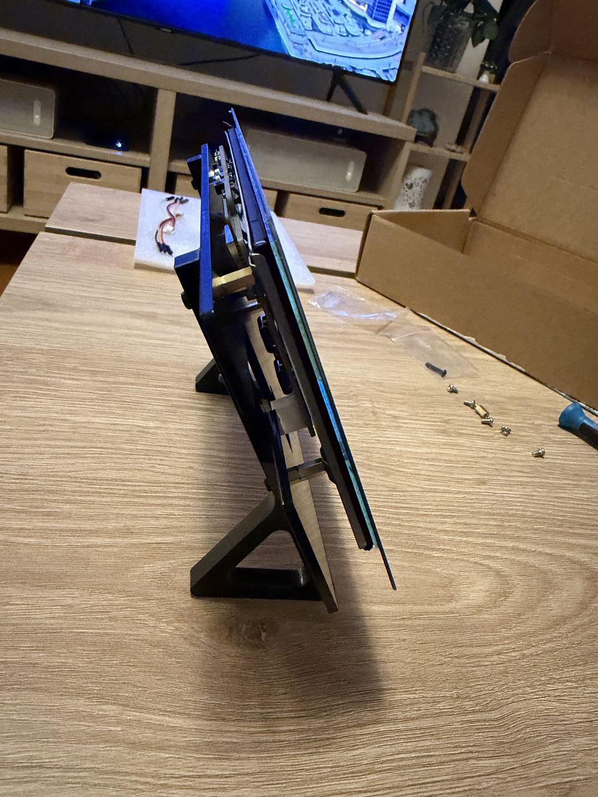
På venstre side av kortet er det to USB-C-porter. Plugg kabelen inn i den som er merket USB, og koble den andre enden til laderen. Kabelen går inn i åpningen mellom bakplaten og skjermen. Skjermen starter av seg selv.
Begge portene gir strøm. Det er porten merket USB som brukes når ny programvare legges inn med kabel.
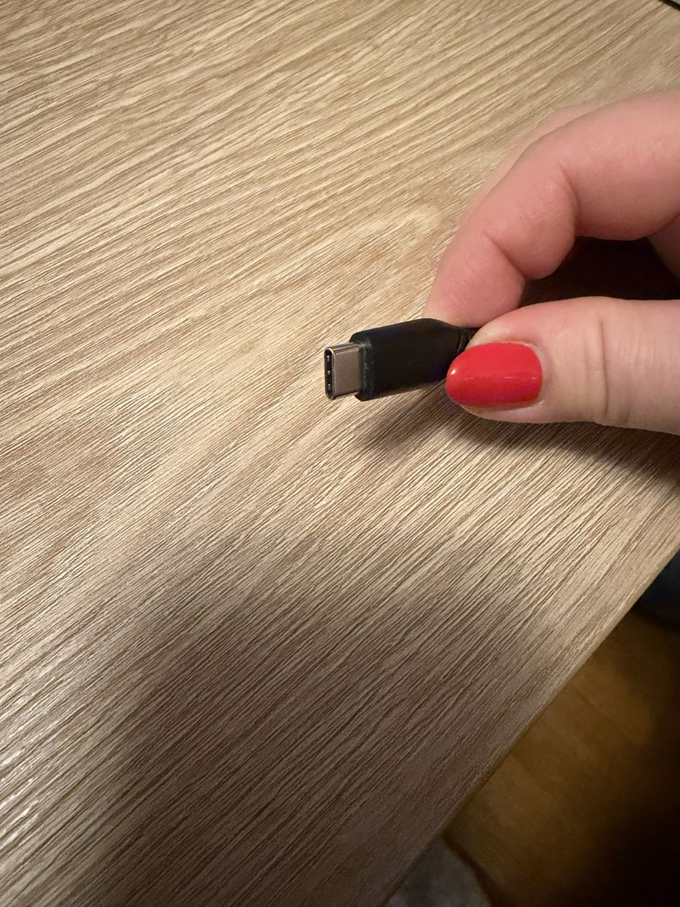
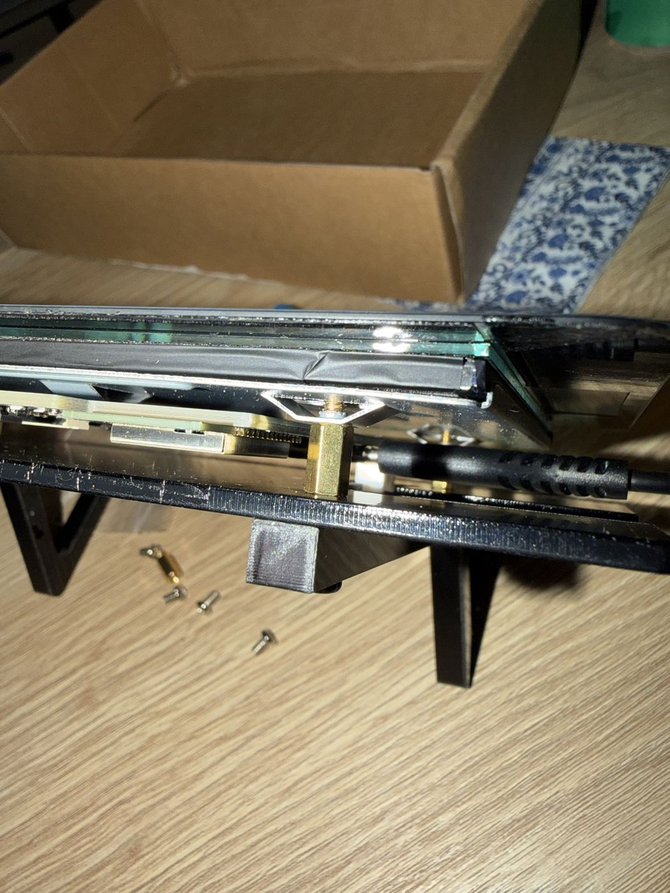
Hvis skjermen ikke er satt opp ennå, lager den sitt eget trådløse nett:
Etterpå finner du oppsettsiden på http://multidisplay.local/oppsett. Hold inne BOOT-knappen mens du kobler til strømmen hvis du vil komme tilbake til oppsettnettet.
Les videre i bruksanvisningen om hvordan du bruker skjermen og hva hvert skjermbilde viser.